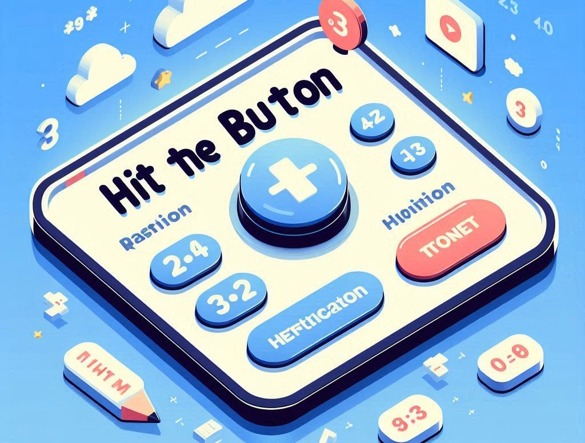

Hit The Button: The Ultimate Interactive Math Game for Kids
Mathematics can be a challenging subject for many children, but what if learning math could be fun and exciting? Enter Hit The Button, an interactive math game that has taken classrooms and homes by storm. With its simple design and fast-paced gameplay, Hit The Button has become a favorite tool for teachers, parents, and students alike, helping to build essential arithmetic skills in a playful and engaging way.
In this article, we'll take a closer look at what Hit The Button offers, how it works, the benefits it provides, and why it has become such an effective learning tool for kids.
What Is "Hit The Button"?
Hit The Button Maths Game is an engaging online game designed to test and enhance quick-thinking and reaction times by challenging players to press a button as rapidly and accurately as possible within a set time limit. It features various modes, including speed challenges, accuracy tests, and memory games, making it both a fun and competitive activity. The game’s simplicity and the drive to beat high scores make it addictive, while its straightforward mechanics also make it a popular choice for educational purposes and casual play.
- Addition
- Subtraction
- Multiplication
- Division
- Number Bonds
- Doubles & Halves
The goal of the game is simple: answer as many questions correctly as possible within a set time limit, typically 1 minute. Players are presented with quick-fire questions on the selected topic, and they must hit the correct answer from several options on the screen. The faster they answer, the more questions they get to attempt, which creates a fun and competitive atmosphere that encourages mastery of the material.
The game’s clean and intuitive interface makes it accessible to children of all ages, even those who are just starting to learn arithmetic. The colorful buttons and straightforward navigation ensure that kids can focus on the math problems without getting distracted or frustrated.
How Does It Work?
Playing Hit The Button is incredibly easy. Here’s a step-by-step breakdown of how the game operates:
- Choose a Category: Players select a category such as multiplication tables, number bonds, or doubling numbers.
- Pick a Level: Players choose from different difficulty levels, making the game suitable for various ages and abilities.
- Start the Timer: Players have 60 seconds to answer as many questions as possible by hitting the correct button.
- Score and Feedback: After the round ends, the game displays the score and provides feedback.
- Repeat and Improve: Players can replay to improve their score and accuracy with each attempt.
Why Is "Hit The Button" So Effective?
1. Timed Challenges Create Excitement
The time-based nature of the game adds an element of excitement that kids love. The ticking clock motivates players to think quickly and reinforces the importance of fast recall when it comes to math facts.
2. Immediate Feedback Encourages Learning
Hit The Button provides instant feedback after each round, helping kids learn from their mistakes and improve next time.
3. Customizable Difficulty Levels
The game adapts to different skill levels, making it a valuable tool for children of various ages and abilities.
4. Building Confidence in Math Skills
The game helps build confidence by allowing kids to practice at their own pace, offering a boost in self-esteem when they improve.
5. Engaging and Fun Interface
The colorful and user-friendly interface keeps children engaged while maintaining a focus on the math problems.
6. Short and Sweet Sessions
The 60-second rounds keep children focused, offering quick bursts of learning that can easily fit into a busy schedule.
7. Versatile Learning Tool
Hit The Button can be used in classrooms, at home, or for independent study, making it a versatile tool for learning math.
Who Can Benefit from "Hit The Button"?
Hit The Button is beneficial for:
- Primary School Students: Reinforces concepts taught in school and provides additional practice.
- Teachers: A fun classroom tool for reviewing key math concepts.
- Parents: An engaging way for children to practice math at home.
- Struggling Learners: Provides extra help for those needing more practice with math skills.
Final Thoughts: Why "Hit The Button" Should Be a Staple in Math Education
In today’s digital world, educational games like Hit The Button make learning more interactive and accessible. By combining essential math practice with engaging gameplay, Hit The Button turns math into an exciting challenge. Whether used at home or in the classroom, it’s a valuable tool that fosters learning, builds confidence, and makes math practice enjoyable for children.